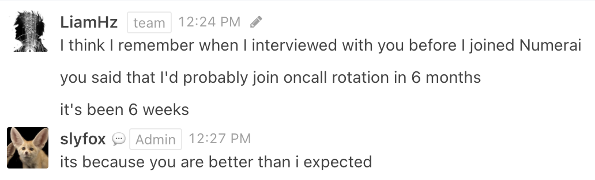

January 2021
Personal
This month at Numerai I…
- Broke production systems twice in three days (first time I’ve done this), was scared of breaking things afterwards and was less productive as a result, and finally overcame this fear, wrote post mortems, and am now much more diligent about testing my code.
- Learned a lot of Pandas while building out different things for the hedge fund’s data pipeline.
- Completed my first oncall rotation. 
Bought a nice digital piano (Roland FP30) and had a lot of fun learning different themes from films and TV shows.
Struggled with living in isolation. I’m an introvert, but going without any human interaction for a week can be rough.
Read the first 20% of Worm (7000 page Superhero novel), Existentialism is a Humanism, Mistborn: The Final Empire, and Kafka on the Shore.
Watched Violet Evergarden and The Queen’s Gambit.
Links
What the Hell is Going On?
Information scarcity creates authority, abundance causes the decline of institutions.
Peter Thiel’s Religion
Thiel’s interrelated thoughts on mimetic, monopolies, religion, and innovation.
Pathologic is Genius, And Here’s Why
Two hour video essay on an obscure Russian video game and how games can have meaning beyond enjoyment.